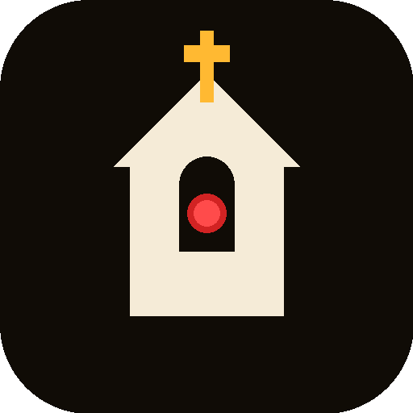
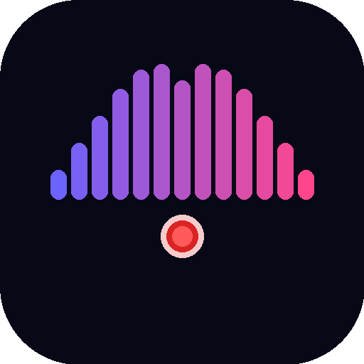
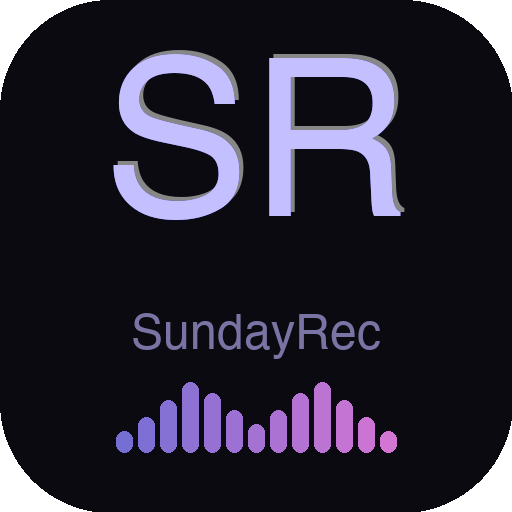
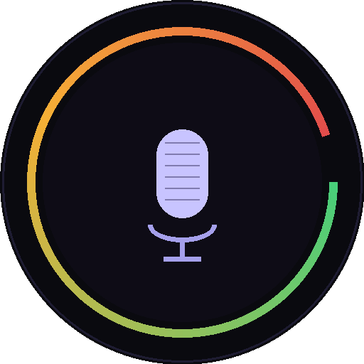

Klikk på et alternativ for å se det i ulike størrelser. Gi beskjed om hvilken du liker, og jeg bygger full ikonpakke av den.
Alternativ 1
Moderne
Mørk avrundet firkant med lilla glødende ring og hvit mikrofon. Ren, tidløs app-ikonstil — passer perfekt i Dock og systemfelt.
Alternativ 2

Kirke
Kirkesilhuett med gulltoppet kors og rødt opptakspunkt i buevinduet. Tydelig kirketilknytning — alle forstår hva appen gjør.
Alternativ 3

Bølge
Lydnivå-stolper som danner en bue over et rødt opptakspunkt. Moderne og teknisk — signaliserer audio/opptak umiddelbart.
Alternativ 4

SR Monogram
Store lilla «SR»-bokstaver med lydnivå-stolper under. Profesjonell og merkevarebygging-vennlig — lett gjenkjennelig.
Alternativ 5

Rund
Svart sirkel med regnbuebue (som en VU-meter) og hvit mikrofon inni. Sirkelformen fungerer godt som app-ikon på alle plattformer.
Gi beskjed om du vil ha fargevariasjoner, kombinasjoner av disse, eller noe helt annet.